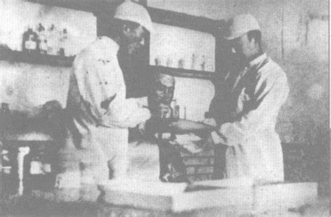

宛平烽火下的生命驰援

1937年7月7日夜，日军炮击宛平城后，城内守军（国民革命军第29军）与平民伤亡激增。由于医疗条件极度匮乏，城内寺庙、学校被紧急改造成临时救护所。29军随军医生在炮火中抢救伤员，药品短缺时用食盐兑水消毒，撕毁衣物作绷带。北平红十字会组织学生和市民冒死运送伤员，许多人穿越火线时中弹牺牲。宛平妇女协助护理，用土法止血（如锅底灰敷伤口），甚至捐献门板作担架。 从护士李秀兰的日记中，我们可以窥见当时战斗的紧张：7月8日，日军机枪封锁城门，我们抬着伤员从城墙缺口爬进爬出。一名小战士腹部中弹，肠子外露，我手抖着用煮过的筷子塞回伤口……夜里没灯，只能摸黑换药，他疼得咬断了自己的毛巾，至死没喊一声。""7月10日，教会送来的最后一点吗啡用完了，伤员们说：‘留给更重的兄弟吧。’" 今日宛平城内仍有"抗日战争纪念馆"，展出一只锈迹斑斑的战地医药箱，内装当年用过的止血钳、残破的绷带。2015年，最后一位参与过宛平救护的红十字会护士周韵华去世，生前回忆："我们不是英雄，只是没逃。"